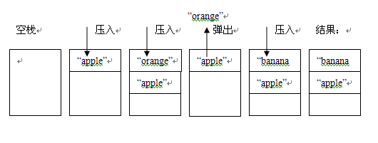

理解内存分配
- 原始值 和 引用值
- 栈 和 堆
原始值 和 引用值
在ECMAScript中，变量可以存放两种类型的值，即 原始值 和 引用值。
原始值 指的就是代表原始数据类型（基本数据类型）的值，即Undefined，Null，Number，String，Boolean类型所表示的值。
引用值 指的就是复合数据类型的值，即Object（包括Function，Array，以及自定义对象等等）。
栈 和 堆
与 原始值 和 引用值 对应存在两种结构的内存即 栈 和 堆 。
栈 是一种后进先出的数据结构，在javascript中可以通过Array来模拟 栈 的行为。
|
|
我们来看一下，与之对应的内存图：

原始值 是存储在 栈 中的简单数据段，也就是说，他们的值直接存储在变量访问的位置。
堆 是存放数据的基于散列算法的数据结构，在javascript中，引用值 是存放在 堆 中的。
引用值 是存储在 堆 中的对象，也就是说，存储在变量处的值（即指向对象的变量，存储在 栈 中）是一个指针，指向存储在 堆 中的实际对象。
例：
var obj = new Object();
obj存储在 栈 中。它指向于new Object()这个对象，而new Object()是存放在 堆 中的。
那为什么 引用值 要放在 堆 中，而 原始值 要放在 栈 中，不都是在内存中吗，为什么不放在一起呢？那接下来，让我们来探索问题的答案！
首先，我们来看一下代码：
|
|
然后我们来看一下内存分析图：

变量num，bol，str为基本数据类型，它们的值，直接存放在 栈 中，obj，person，arr为复合数据类型，他们的引用变量存储在 栈 中，指向于存储在 堆 中的实际对象。
由上图可知，我们无法直接操纵 堆 中的数据，也就是说我们无法直接操纵对象，但我们可以通过 栈 中对对象的引用来操作对象，就像我们通过遥控机操作电视机一样，区别在于这个电视机本身并没有控制按钮。
现在让我们来回答为什么 引用值 要放在 堆 中，而 原始值 要放在 栈 中的问题：
记住一句话：能量是守衡的，无非是时间换空间，空间换时间的问题。
- 堆 比 栈 大
- 栈 比 堆 的运算速度快
对象是一个复杂的结构，并且可以自由扩展，如：数组可以无限扩充，对象可以自由添加属性，将它们放在 堆 中，通过引用的方式查找到 堆 中的实际对象再进行操作，是为了不影响 栈 的效率。
相对于复合数据类型而言，简单数据类型就比较稳定，并且它只占据很小的内存。
不将简单数据类型放在 堆 是因为：
通过引用到 堆 中查找实际对象是要花费时间的，而这个综合成本远大于直接从 栈 中取得实际值的成本。
所以简单数据类型的值直接存放在 栈 中。
总结：
程序很简单，但它是一切的根本，基础是最重要的，因为摩天大厦也是一块砖一块瓦的搭建起来的。
内存是程序执行的根本，搞懂了内存，就等于搞懂了一切。
心血之作，鼓励一下自已，加油！
参考：
JavaScript高级程序设计